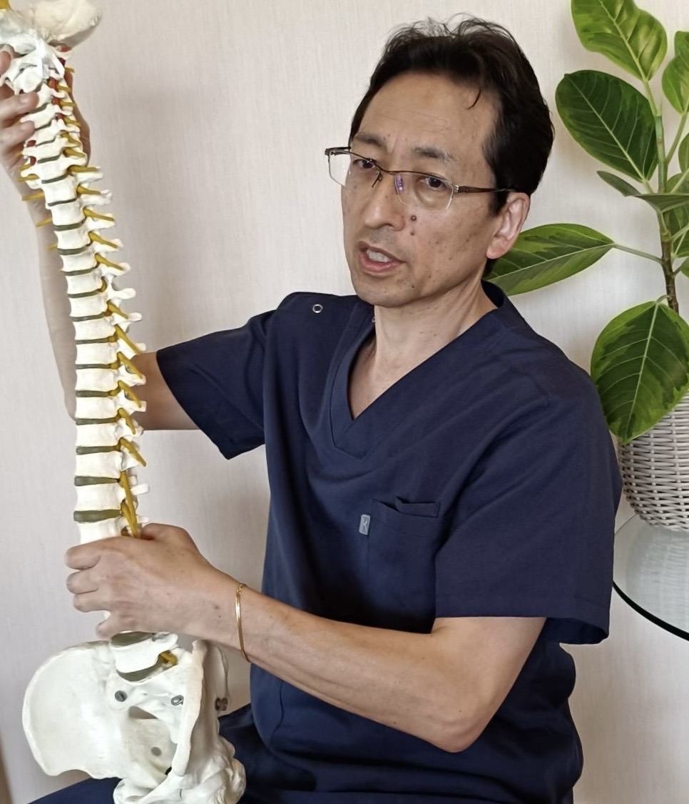

院長挨拶
はじめての場所で身体のことを相談するのは、少し緊張するものです。まずはお話を伺い、身体の状態を一緒に確認しながら進めます。
長野心楽整体院 院長
島田 俊明

はじめまして。
長野心楽整体院 院長の島田俊明です。
私が整体師を目指したきっかけは、自分自身が痛みに苦しんだ経験でした。
中学生の頃、ある朝突然歩けなくなり、初めて「身体が思うように動かない」という不安を経験しました。その後も武道を続ける中で何度も腰を痛め、なかなか楽にならないつらさも味わいました。
「この痛みが少しでも楽になるなら、どこへでも行きたい。」
そう思うほど悩んだからこそ、痛みだけでなく、不安な気持ちもよく分かります。
だから私は、患者さま一人ひとりのお話に耳を傾け、安心して施術を受けていただけることを大切にしています。
施術後に見せてくださる笑顔や、「ありがとう」「来て良かった」という言葉が、私にとって何よりの喜びです。
私が目指しているのは、痛みを和らげることだけではありません。心も身体も楽になり、日々を少しでも前向きに過ごせるようになっていただくことです。
お身体のことでお悩みでしたら、一人で抱え込まず、お気軽にご相談ください。ご縁をいただいた皆さまと、これからも誠実に向き合ってまいります。

院名に込めた想い
「心楽」という名前には、「心から楽しくなれる整体院」でありたいという想いを込めています。
身体の状態を確認しながら、必要なことをわかりやすくお伝えします。身体の不調だけでなく、不安なお気持ちにも寄り添い、心も身体も少し楽になれる時間をつくっていきたいと思っています。
ご予約・ご相談
ネット予約では、最新の料金と空席を確認できます。
予約前に気になることがある方は、お電話でご相談ください。
空席を確認するホットペッパービューティーへ移動します
予約前に電話で相談する026-264-7788